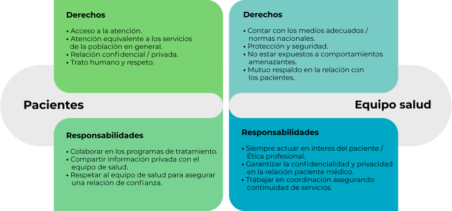
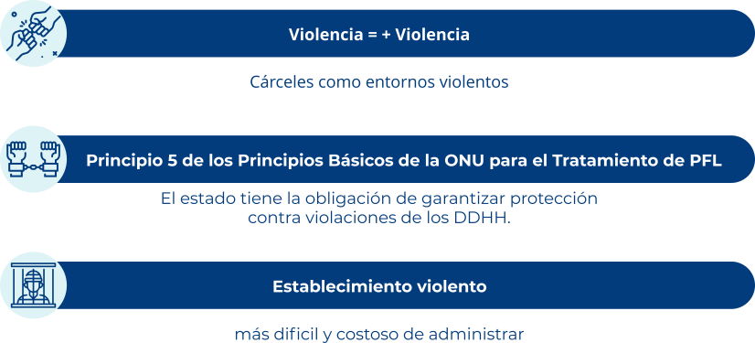
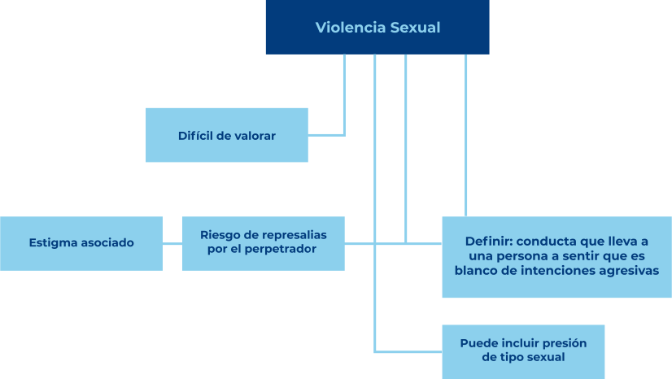
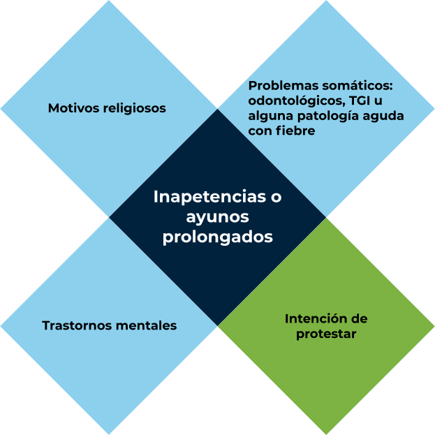
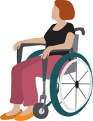

Introducción
Partiendo de la base que el estado tiene la obligación especial del cuidado de aquellos quienes se encuentran en centros de detención, donde debe cubrir la seguridad, sus necesidades básicas y el reconocimiento de los derechos humanos incluyendo el derecho a la salud, los centros de detención deben ofrecer un servicio de cuidado primario en salud con personal, recursos e instalaciones mínimo con el mismo estándar de aquel disponible en la comunidad general, cobrando relevancia el principio de equivalencia como medida importante de la idoneidad del cuidado en salud en sitios de reclusión. Además, cabe resaltar que todo el personal de salud debe tener completa autonomía profesional y deben ser preferiblemente empleados de una autoridad de salud, a su vez deben entender y aceptar claramente el derecho a practicar su profesión dentro de los códigos de conducta profesional y las normas éticas. Es importante que todo el personal que labora en los centros de detención acepte que para el equipo de salud las personas privadas de la libertad son pacientes y deben ser tratados como tales.
La obligación de cuidado que recae en el personal profesional es la misma ya sea que el paciente se encuentre en libertad o en detención. La persona privada de la libertad (PPL) como paciente tiene el derecho a la confidencialidad y al tratamiento y cuidado que esté sujeto a consentimiento informado. Los servicios carcelarios de salud no deben estar aislados sino integrados a los sistemas regionales y nacionales de salud.
Por lo anterior, este módulo aborda aspectos como el derecho a la salud de la PPL como paciente, los dilemas éticos propios del trabajo del personal de salud penitenciaria, la vulneración de derechos en el entorno penitenciario tales como el abuso y violencia sexual, tortura, malos tratos, huelga de hambre y aislamiento solitario. Y por último se hará una aproximación al tema del enfoque diferencial en perspectiva de la salud penitenciaria.
Al final del módulo, se pretende que el aprendiz fomente el goce efectivo del derecho a la salud de la población privada de la libertad en el marco de los desafíos éticos propios del ámbito penitenciario, teniendo en cuenta el enfoque de derechos, diferencial y los principios éticos propios de los profesionales de la salud.
1. El derecho a la salud de la PPL. PPL como pacientes
A manera de introducción, se cita una de las frases de una persona privada de la libertad que cambió el rumbo de un país, Nelson Mandela:
“No puede juzgarse a una nación por la manera en que trata a sus ciudadanos más ilustres, sino por el trato dispensado a los más marginados: a sus presos”.
De allí que tratemos a todas las personas, estén en prisión o no como seres humanos, independientemente del delito que los llevó a la privación de la libertad.
A su vez, es importante que todo el personal que labora en centros de detención acepte que para el equipo de salud las personas privadas de la libertad son pacientes y deben ser tratados como tales. La obligación de cuidado que recae en el personal profesional es la misma, ya sea que el paciente se encuentre en libertad o privado de ella.
Hay ciertas características propias de la PPL tales como:
- Son totalmente dependientes del personal penitenciario
- El Estado es el responsable de satisfacer al menos sus necesidades básicas como acceso al agua, a los servicios de salud, a una buena infraestructura y una buena alimentación.
- Conservan todos sus derechos salvo la libertad.
- La relevante importancia que cobra la salud penitenciaria en la salud pública comunitaria y general.
Principios básicos en salud penitenciaria
Derecho fundamental a la salud tanto física como mental
02
Tratamientos deben ser con el mismo nivel de calidad que se ofrece a quienes no están detenidos
03
La privación de la libertad no significa que tenga menor derecho al cuidado de la salud
04
La PPL no debe salir de detención en un estado peor que cuando ingresaron
05
Primer deber ante cualquier PPL es CLÍNICO
Deberes y derechos de la PPL y los equipos de salud penitenciarios

De acuerdo a la delegada de salud en detención del CICR Sylvia Wüst (2010) menciona que “Una buena política de salud en las cárceles es una buena política de salud pública”.
Juramento de Atenas
(Consejo internacional de servicios médicos penitenciarios)
«Nosotros, los profesionales de la salud que trabajamos en entornos carcelarios, reunidos en Atenas el 10 de septiembre de 1979, por este medio prometemos, manteniendo el Juramento de Hipócrates, que nos esforzaremos por dar el mejor cuidado posible a quienes están recluidos en prisiones por cualquier motivo, sin prejuicios y dentro de nuestra ética profesional».
Nos comprometemos:
01A abstenernos de autorizar o aprobar cualquier castigo físico.
02A abstenernos de participar en cualquier tipo de tortura.
03A no participar en forma alguna de experimentación con seres humanos que se lleve a cabo con personas encarceladas sin que estas den su consentimiento con conocimiento de causa.
04Respetar el carácter confidencial de la información obtenida en el curso de nuestras relaciones profesionales con los pacientes encarcelados.
05Que nuestro juicio médico se base en las necesidades de nuestros pacientes y a que tenga prioridad sobre todos los aspectos no médicos.
Nota
Encuentre sugerencias internacionales para mejorar la salud y reducir los riesgos de las personas privadas de la libertad, en el libro Prisons and Health.
Libro pdf online. World Health Organization. Prisons and Health (2014). Regional Office for Europe.
2. Dilemas éticos en el ejercicio del trabajo en salud en el sistema penitenciario
Nota
A continuación se presenta un documento de la guía destinada a personas y organizaciones expuestas a la asistencia de salud penitenciaria.
Anexo. Comité Internacional de la Cruz Roja CICR. Asistencia de salud en lugares de detención: Guía práctica (2014).
3. Vulneración de los derechos en el contexto penitenciario. Abuso y violencia sexual, tortura, malos tratos, huelga de hambre y confinamiento solitario
Abuso y violencia sexual
Las cárceles generalmente, son consideradas lugares violentos en comparación con la comunidad, de allí que la violencia en las prisiones es y debe ser un asunto prioritario tanto de la administración penitenciaria como de los servicios de salud al considerarse también un problema de salud pública.

Tortura, malos tratos y tratos degradantes

En la Convención de las Naciones Unidas contra la tortura, y otros tratos crueles, inhumanos o degradantes, celebrada el 10 de diciembre de 1984 en New York, se definió la tortura como:
«Dolor o sufrimiento grave, ya sea físico o mental, infringido intencionalmente, con propósito específico tal como obtener una confesión o aplicar un castigo, por una persona que ejerce una función pública. Por el contrario, el tratamiento cruel, inhumano o degradante (también llamado maltrato) puede implicar menos dolor o sufrimiento pero sigue siendo sustancial y no necesariamente se comete con un fin específico.»
Distinción tortura y tratos crueles inhumanos y degradantes
TORTURA
1. Sufrimiento físico o mental severo.
2. De carácter intencional.
3. Con el fin de obtener confesión, autoinculpación, castigo, amedrantamiento, humillación.
4. Funcionarios públicos en ejrcicio de sus funciones.
5. Que no corresponda a la aplicación de sanciones leyes.
MALOS TRATOS / TRATO INHUMANO
Posición jurisprudencia 1.
Todos los criterios anterioresexcepto el de severidad.
Posición jurisprudencia 2.
Todos los criterios anterioresexcepto el de finalidad.
TRATO DEGRADANTE
No se cumplen criterios de gravedad ni finalidad.
Esquema del Doctor Pau Pérez (2015).Congreso Nacional de Psiquiatría. Armenia, Quindío.
Para tener en cuenta:
Toda tortura es psicológica.
Torturar no equivale a dolor. Equivale a manipular la expectativa del terror
La ausencia de secuelas no es equivalente a la ausencia de tortura
La distinción entre tortura y trato inhumano y degradante puede tener sentido desde el punto de vista legal, pero carece de sentido desde el punto de vista de las evidencias médicas y psicológicas.
La tortura está prohibida, independientemente del contexto y el ámbito de cada país, y no existen circunstancias que justifiquen una excepción a esta prohibición.
Nota
Para continuar la invitación es a visualizar el siguiente vídeo que corresponde a una visión global de cómo las personas privadas de la libertad tienen derecho a ser tratadas con humanidad.
Video. Cruz Roja Internacional CICR. Cruz Roja Nogales. (2011). En detención: La humanidad tras las rejas. [Archivo de video].
Huelga de hambre
Causa de dejar de comer = diferencias en el manejo médico.

La pauta más importante para los médicos penitenciarios con respecto a las huelgas de hambre es la Declaración de Malta de la Asociación Médica Mundial.
Es vital reconocer que ciertos factores médicos pueden predisponer la rápida evolución fatal de un ayuno, tales como:
- Enfermedad cardíaca
- Insuficiencia renal
- Diabetes, en especial si es insulino requiriente.
- Úlceras gástricas o duodenales
4. El enfoque diferencial en perspectiva de la salud penitenciaria
“Las personas con discapacidad son aquellas que presentan deficiencias físicas, mentales, intelectuales o sensoriales a largo plazo que, al interactuar con el entorno, encuentran diversas barreras, que pueden impedir su participación plena y efectiva en la sociedad, en igualdad de condiciones con los demás ciudadanos”. (Convención de Naciones Unidas sobre los Derechos de las personas con discapacidad 2006, y Clasificación Internacional del Funcionamiento, la Discapacidad y la Salud, OMS, 2002).
La discapacidad forma parte de la condición humana: casi todas las personas sufrirán algún tipo de discapacidad transitoria o permanente en algún momento de su vida. La discapacidad es compleja, y las intervenciones para superar las desventajas asociadas a ella son múltiples, sistémicas y varían según el contexto.
Necesidades y retos especiales:

- Acceso a la justicia.
- Necesidad de protección.
- No discriminación.
- Cuidado de la salud.
- Lugar de detención que permita la accesibilidad.
- Inclusión social.
Necesidades y retos especiales:
- Acceso a la justicia.
- Discriminación.
- Vínculos con la familia y la comunidad.
- Barreras de idioma.
- Religión.
- Programas penitenciarios.
- Cuidado de la salud.
Necesidades y retos especiales:

- Acceso a la justicia.
- No aislamiento.
- Estado de inmigración.
- No discriminación.
- Cultura y religión.
Necesidades y retos especiales:
- Acceso a la justicia.
- No Aislamiento.
- No Discriminación.
Necesidades y retos especiales de no aislamiento, no discriminación, así como las relativas a la identidad de género y orientaciones sexuales, que constituyen en algunos casos obstáculos para acceder y gozar de servicios de salud confiables, eficientes, cálidos y humanos
A nivel mundial existe un promedio de 9 millones de personas detenidas en establecimientos penitenciarios. A menudo, las difíciles condiciones de vida en dichos establecimientos exacerban los problemas preexistentes y favorecen el desarrollo de nuevos problemas de salud mental en la población privada de libertad. La casi integralidad de estas personas experimenta un estado depresivo o síntomas relacionados al estrés provocados por la reclusión. Se estima que por lo menos la mitad de ellas presentan un trastorno de la personalidad y que un millón de ellas padecen de trastornos mentales severos, como psicosis o depresión. De acuerdo con la literatura, existe una frecuente comorbilidad entre discapacidades mentales y el uso de substancias psicoactivas en esta población. A pesar de ser internacionalmente reconocido que las personas con discapacidades mentales no deberían ser detenidas en establecimientos penitenciarios, se puede observar que en la realidad muchas de ellas se encuentran privadas de libertad en dichos establecimientos y por lo tanto viven en un entorno que puede ser perjudicial para su salud.
Son minorías dentro de las poblaciones carcelarias a nivel mundial siendo entre el 2 y el 9% de la PPL de un país. La provisión de los servicios de salud en las prisiones necesita reconocer que el sexo de la mujer y su género tienen necesidades específicas de salud, y deben ser personalizadas y proporcionadas de una manera integral y humana. Los estándares que deben definir los sistemas de salud para las mujeres privadas de su libertad se establecen en las Reglas de Bangkok de las Naciones Unidas.
Necesidades y retos especiales:
- Acceso a la justicia.
- Vínculos con la familia y la comunidad.
- Programas de salud específicos con énfasis en salud sexual y reproductiva.
Glosario
Aislamiento solitario:forma de confinamiento en que las personas privadas de la libertad pasan de 22 a 24 horas al día solos en sus celdas, separados unos de otros, durante tiempos variables que pueden ir de semanas a meses.
Cuidado primario en salud:son todas las acciones encaminadas a la prevención, diagnóstico, tratamiento, rehabilitación y paliación en salud, que se realizan desde un nivel local en beneficio de una comunidad. Es la base y parte integral de cualquier sistema de salud.
Enfoque diferencial:forma de abordar las necesidades de grupos poblacionales específicos en función de su identidad y sus condiciones particulares.
LGTBIQ:Lesbianas, Gays, Transgénero, Bisexuales, Intersexuales, Queer.
Salud penitenciaria:rama de la salud que debe ser parte de cualquier sistema de salud pública de cada país. Debe estar en articulación constante con los sistemas generales de salud.
Material complementario
| Nombre del documento o material | Tipo de material | Enlace del recurso |
|---|---|---|
| WMA - The World Medical Association-Declaración de Malta de la AMM sobre las Personas en Huelga de Hambre. (2017). | Documento web. | Ver documento |
| Oficina de las Naciones Unidas Contra la Droga y el Delito UNODC. Reglas Mínimas de las Naciones Unidas para el Tratamiento de los Reclusos. Las Reglas Nelson Mandela. Mayo de 2015. Reglas 24 a 27 y 29 a 35. Servicios Médicos y Sanitarios. | Ver documento |
Referencias bibliográficas
Comité Internacional de la Cruz Roja CICR. Asistencia de salud en lugares de detención: guía práctica (2014).https://www.icrc.org/es/publication/atencion-salud-detencion-guia-practica
Comisión Interamericana de Derechos Humanos (CIDH). Informe sobre los DDHH de las personas privadas de la libertad en las Américas (2011). 237p.https://www.icrc.org/es/publication/atencion-salud-detencion-guia-practica
Cruz Roja Internacional CICR. Cruz Roja Nogales. (2011). En detención: la humanidad tras las rejas. [archivo de video]. Recuperado de https://www.youtube.com/watch?v=XKJo-XzN9A4&t=341s
López, G., Luna, A. y colaboradores. Sanidad Penitenciaria: Dilemas médico-legales. Capítulo 5 (2005). Organización Médica Colegial de España. Consejo General de la Abogacía Española. Sociedad Iberoamericana de Derecho Médico.
Ministerio de salud. Resolución número 1995 de 1999 (Julio 8). Normas para el manejo de la Historia Clínica.https://www.medicosgeneralescolombianos.com/images/Leyes/RES1995.DOC
Naciones Unidas. Oficina del Alto Comisionado de las Naciones Unidas para los derechos humanos (2004). Protocolo de Estambul. Manual para la investigación y documentación eficaces de la tortura y otros tratos o penas crueles, inhumanos o degradantes.https://www.ohchr.org/Documents/Publications/training8Rev1sp.pdf
Naciones Unidas (2011). Convención sobre los derechos de las personas con discapacidad.https://www.un.org/esa/socdev/enable/documents/tccconvs.pdf
Oficina de las Naciones Unidas contra la droga y el delito (UNODC) (2014) Las Reglas Mínimas de las Naciones Unidas para el Tratamiento de los Reclusos (Reglas Nelson Mandela).https://www.unodc.org/documents/justice-and-prison-reform/Brochure_on_the_The_UN_Standard_Minimum_the_Nelson_Mandela_Rules-S.pdf
UNODC Oficina de las Naciones Unidas contra la Droga y el Delito (2009). Manual sobre Reclusos con necesidades especiales.https://www.unodc.org/documents/justice-and-prison-reform/MANUAL_RECLUSOS_CON_NECESIDADES_ESPECIALES_1.pdf
World Health Organization. Prisons and Health (2014). Regional Office for Europe.http://www.euro.who.int/__data/assets/pdf_file/0005/249188/Prisons-and-Health.pdf
WMA - The World Medical Association-Declaración de Malta de la AMM sobre las Personas en Huelga de Hambre.https://www.wma.net/es/policies-post/declaracion-de-malta-de-la-amm-sobre-las-personas-en-huelga-de-hambre/
Fotografías y vectores tomados de https://www.shutterstock.com/ y https://www.freepik.es/
Licencia Creative Commons
CC BY-NC-SA
Ver licencia.